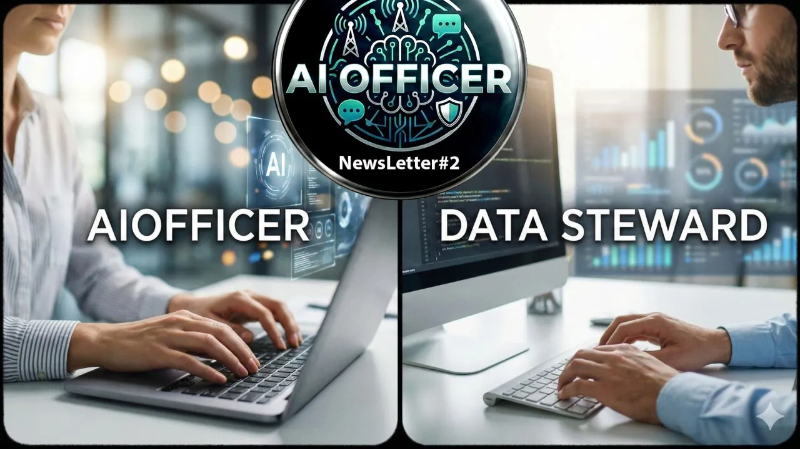

NewsLetter #2
Parliamo di Governance?
📌 Riflessione La settimana in cui abbiamo parlato di governance (mentre qualcuno pensa che sia ancora presto)

Creativo | Comunicazione Pubblica | AI e Ecosistemi Informativi | Giornalista
15 dicembre 2025
AI Officer :: NewsLetter#2 - Interferenze semantiche sull'AI nella Comunicazione Pubblica italianaQuesta settimana abbiamo scelto di parlare di quello che molti sanno ma pochi nominano: l’Italia ha una legge sull’Iintelligenza Artificiale, la Legge n. 132/2025. Prima in Europa. E quasi nessuno lo sa.
Non è una questione di celebrazione nazionalista. È che mentre il dibattito pubblico resta inchiodato su “ChatGPT sostituirà i giornalisti?” o “quale prompt per fare le slide?”, noi abbiamo una cornice normativa che dice chiaramente: nella PA l’AI è strumento, la decisione (e la responsabilità) resta umana.
Questa settimana abbiamo anche dato nome e cognome a due figure professionali che dovranno presidiare questa governance: AI Officer e Data Steward. Non sono futuribili. Sono necessari adesso. Se queste siano poi rappresentabili da una persona o da un team, lo vedremo. Perché il punto non è se usare l’AI nella Comunicazione Pubblica. Il punto è come usarla senza dilapidare quel “Capitale Ssemantico” di cui Luciano Floridi continua a ricordarci l’esistenza. E per farlo, servono competenze, ruoli, responsabilità.
Questa newsletter continua a portare interferenze dove serve. Buona lettura.
📋 I POST DELLA SETTIMANA
1. L’Italia è il primo Paese in Europa ad avere una legge nazionale sull’AI. E nessuno ne parla.
Il 23 settembre 2025 l’Italia ha approvato la Legge n. 132, prima normativa nazionale organica sull’intelligenza artificiale in Europa. È entrata in vigore il 10 ottobre. Eppure se ne parla pochissimo. (qui il PDF: https://lnkd.in/drMcEqAa )
Cosa dice la legge:
Approccio antropocentrico: l’AI come strumento al servizio della persona
Nella PA l’IA può essere usata solo in funzione “strumentale e di supporto”
La decisione finale resta sempre umana (art. 14)
#AGID e #ACN designate come autorità nazionali responsabili
Deleghe al Governo per decreti attuativi entro 12 mesi
Perché è importante per i comunicatori pubblici: Non è dettaglio tecnico. È il framework dentro cui opereremo nei prossimi anni. Quando implementiamo chatbot, assistenti virtuali, strumenti AI per i servizi ai cittadini, dobbiamo garantire che la responsabilità resti umana e che la dignità delle persone sia tutelata.
La domanda che resta aperta: quanti addetti ai lavori nella PA conoscono questa legge? E quanti la stanno già usando per orientare le scelte progettuali?
2. Cosa fa davvero un AI Officer? E perché ogni Ente Pubblico ne avrà presto bisogno.
Se l’Italia ha una legge sull’AI, chi si occuperà di applicarla negli enti pubblici? Entrano in scena due figure: AI Officer e Data Steward.
L’AI Officer è chi garantisce che l’adozione di sistemi AI nell’ente sia coerente, etica, conforme alle normative. Non è un tecnico che programma algoritmi. È un profilo di governance che fa da ponte tra decisori politici, uffici operativi e fornitori tecnologici. Valuta rischi, definisce priorità, assicura che i progetti rispettino i principi antropocentrici della legge.
Il Data Steward presidia la qualità dei dati. Ricordate il 60% di progetti AI senza standard di qualità dati? Il Data Steward è chi dovrebbe impedirlo. Garantisce che i dati usati per addestrare algoritmi siano accurati, rappresentativi, conformi al GDPR. È il guardiano del capitale semantico tradotto in Dati.
Come dialogano con i comunicatori? Costantemente. Quando implementiamo strumenti AI per servizi pubblici, il comunicatore deve capire: cosa può fare davvero questo strumento? Quali bias potrebbe avere? Come gestiamo i casi in cui l’AI non capisce la richiesta?
Queste figure non sono futuribili. Sono necessarie adesso. Tra sei mesi, quando i decreti attuativi della Legge 132/2025 entreranno in vigore, ogni ente dovrà dimostrare governance chiara sull’AI.
🔍 SGUARDI LATERALI
Le parole che raccontano chi stiamo diventando...
Da Parole O_Stili
Ogni anno alcune parole vengono scelte come simbolo del tempo che viviamo. “Rage bait”, “Vibe coding”, “Parasocial” e “6-7” non sono solo slang digitale. Sono indicatori culturali che rivelano comportamenti, abitudini condivise, nuove forme di relazione che hanno modellato il nostro quotidiano online. E, in parte, anche quello offline.
Osservarle non significa inseguire trend, ma leggere ciò che sta cambiando: la nostra idea di vicinanza, il modo in cui costruiamo identità pubbliche, la centralità delle emozioni nell’economia dell’attenzione, la rapidità con cui i significati si formano e si consumano.
Perché ci interessa come AI Officer? Perché queste parole raccontano anche il contesto comunicativo in cui gli strumenti AI dovranno operare. Un chatbot della PA che non comprende cosa significhi “parasocial” o “rage bait” rischia di replicare dinamiche tossiche invece di mitigarle.
Le parole non raccontano solo come parliamo, ma il tipo di comunità che stiamo diventando. Ed è da qui che possiamo ripartire, scegliendo un linguaggio che costruisce relazioni più consapevoli. Dentro e fuori dal digitale.
La camera linguistica degli LLM: il punto di Floridi
Da Luciano Floridi e Fondazione E.N.I.A.
La ricerca sui Large Language Model sta attraversando una fase in cui la domanda non è più su che cosa sappiano, ma come producano ciò che chiamiamo sapere.
L’analisi categoriale proposta da Floridi, Jia e Tohmé (pubblicata da Fondazione E.N.I.A.) ricostruisce questo processo con rigore matematico: invece di attribuire ai modelli proprietà antropomorfe, l’attenzione si sposta sulla struttura che collega contenuti, operazioni e risultati.
Il cuore del problema: Gli LLM non risolvono il symbol grounding problem. Lo aggirano sfruttando testi che possiedono già una semantica creata da esseri umani dotati di percezione, esperienza e responsabilità normativa. L’apparente competenza semantica è derivata, non originaria.
Gli LLM operano interamente dentro una “camera linguistica” costruita da corpora umani. Modellano relazioni tra simboli già “fondati” da altri, raccolgono regolarità statistiche nei linguaggi che parlano del mondo, non regolarità del mondo stesso.
La lezione per la governance dell’AI: L’affidabilità non è un attributo intrinseco del modello, ma una proprietà relazionale tra contenuti, strumenti di verifica e interpretazione umana.
Per noi comunicatori pubblici questo significa: Non possiamo delegare la verità semantica a uno strumento che non ha accesso diretto al mondo. Possiamo usare gli LLM come interfacce epistemiche potenti, a patto di non confondere la struttura dei loro output con l’esperienza del reale.
E anche: quando addestriamo un chatbot PA su documenti interni senza verificarne la qualità, stiamo costruando una “camera linguistica” che replica i nostri bias organizzativi a velocità industriale.
💬 CALL TO ACTION
Siamo 233 iscritti (✌🏽)a questa newsletter.
Se questo numero continua a crescere, significa che c’è fame di contenuti che non ci limitiamo a descrivere trend ma portaiamo domande scomode o utili dove servono.
⁉️Vi chiedo tre (3) cose:
Condividete questa newsletter con un collega della PA, un comunicatore, un responsabile innovazione che secondo voi dovrebbe leggerla. La crescita di questa comunità è la misura dell’impatto che possiamo avere.
Scrivetemi nei commenti o in privato: quale tema vorreste approfondire nelle prossime edizioni? Quali domande sull’AI nella comunicazione pubblica vi tengono svegli la notte? Le interferenze semantiche più efficaci nascono dai vostri dubbi.
Agganciatevi ai post settimanali su LinkedIn. Ogni martedì e giovedì pubblico contenuti che diventano poi parte della newsletter domenicale. Commentare, discutere, dissentire: tutto costruisce una comunità più consapevole.
Ci rivediamo martedì mattina con il primo post della settimana. Tema ancora da svelare, ma vi assicuro: continueremo a disturbare il pensiero pigro.
Grazie di essere qui.
Martin Enrico Iglesias AI Officer | Giornalista Professionista ODG | Comunicatore Pubblico